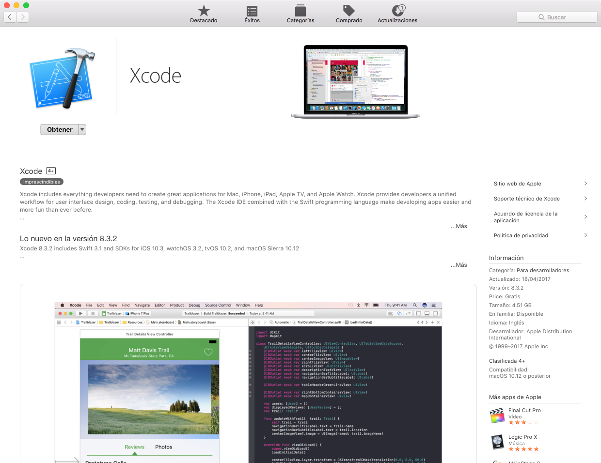
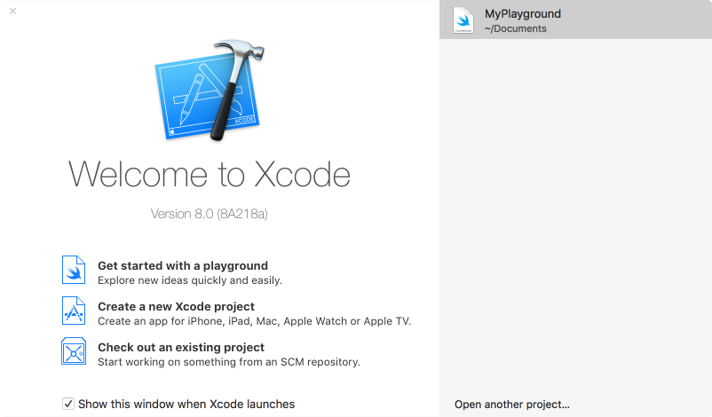
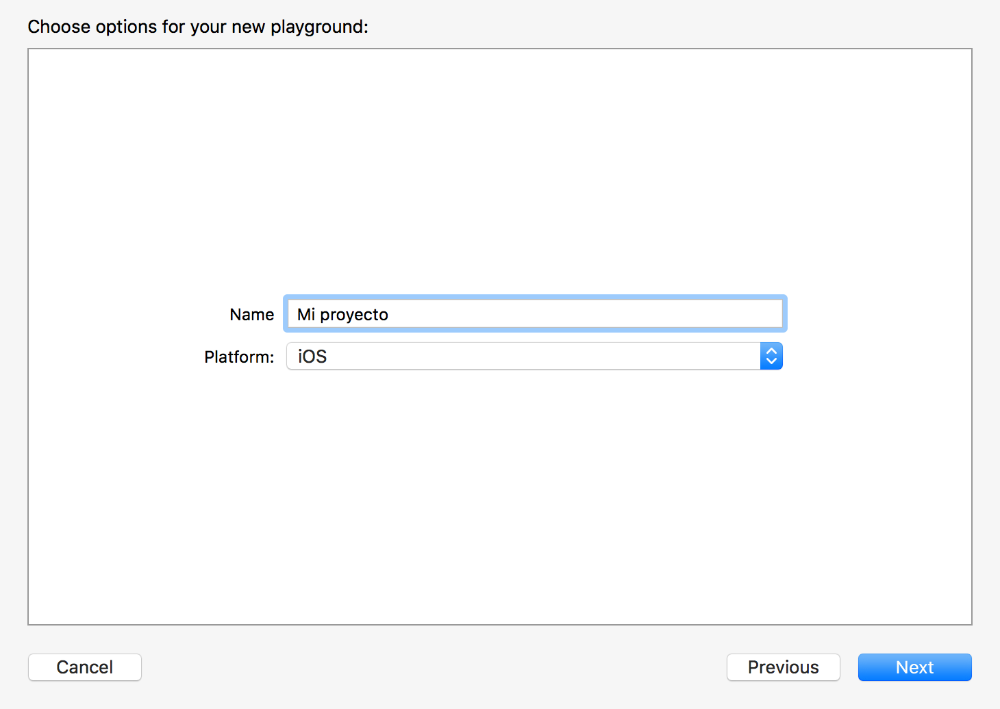
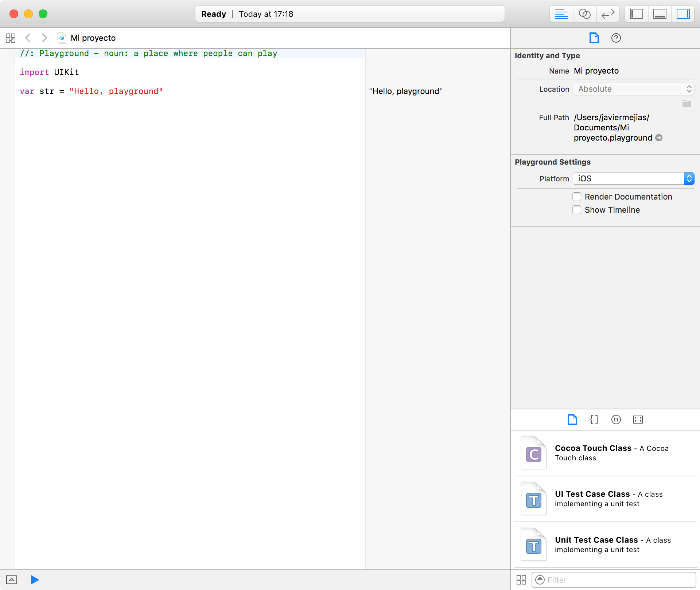

3.2.- XCode.
Xcode es un entorno de desarrollo integrado para macOs que contiene las herramientas necesarias para desarrollar aplicaciones para las distintas plataformas de Apple. Con XCode podemos desarrollar aplicaciones para macOs, iOs, watchOs y tvOs.
Xcode puede descargarse de forma gratuita desde la App Store, para ello tenemos que utilizar un sistema operativo macOs.

Una vez hemos descargado e instalado XCode podemos iniciar la aplicación. En primer lugar nos preguntará si queremos continuar con un proyecto anterior o si queremos crear uno nuevo.

En el caso de seleccionar la creación de un nuevo proyecto, tendremos que elegir la plataforma para la que queremos desarrollar nuestra aplicación.

Una vez hayamos elegido el tipo de proyecto, su nombre y el directorio donde se guardará el código fuente, podemos comenzar a trabajar en nuestro entorno de desarrollo.
